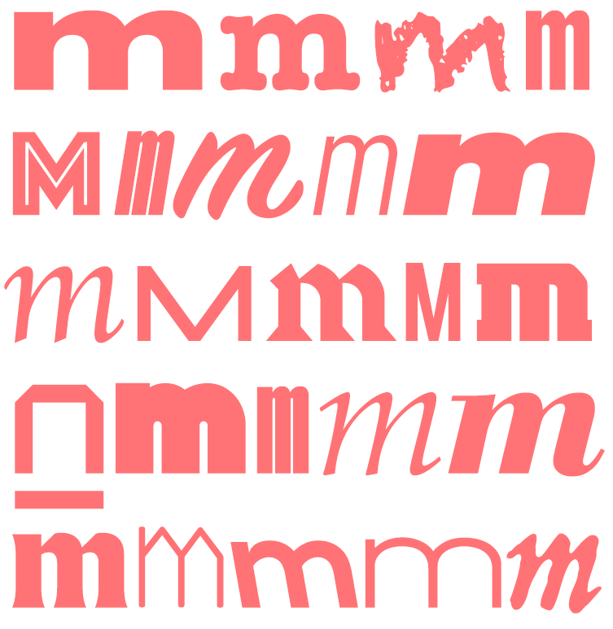

{Fanzine#4} Intessere mondi

Questo è il quarto articolo della nostra fanzine dedicata ai MICROBI, il tema che abbiamo affrontato a Scienceground 1.5. Trovi gli altri articoli e l’indice della fanzine qui:
- Un segnale nel rumore
- Gioco in società: il Dottor Semmelweis
- Gli infetti della Terra
- Intessere mondi
- That’s symbiosis, baby: arte, biologia e altre storie
[Illustrazione di Damiano Fraccaro]
Proponiamo una traduzione e sintesi dell’ultimo capitolo della tesi di dottorato di César Henrique Giraldo Herrera (Herrera, 2018)
Le popolazioni amerindie che hanno vissuto l’incontro colombiano (tra di loro, i Taino e i Callinago) avevano sviluppato forme di conoscenza naturale e pratiche mediche che si identificavano con lo sciamanesimo. L’ontologia sciamanica è profondamente diversa da quella occidentale e cristiana, ma proprio ai primi missionari è toccato il compito di tradurre le nozioni amerindie nel linguaggio delle loro categorie, all’interno dell’organizzazione della conversione. In particolare i missionari sono responsabili della classificazione dello sciamanesimo come forma di religione e quindi dell’interpretazione di alcune entità sciamaniche come spiriti maligni o demoni. L’antropologia, che ha le sue radici nei rapporti dei missionari, ha ereditato le loro strutture concettuali.
Oggi la microbiologia potrebbe aiutare a comprendere le caratteristiche della cultura sciamanica in modo più rispettoso del contesto ontologico, epistemologico e operativo, riconoscendole singolari anticipazioni di nozioni che la microbiologia e la biomedicina stanno sviluppando circa la conoscenza dei microbi, della nostra relazione con loro, e dell’interpretazione e cura delle malattie. Si tratterebbe di una forma di decolonizzazione del pensiero che potrebbe sfidare l’immaginazione scientifica e produrre nuove alleanze, e che dovrebbe basarsi sul riconoscimento che lo sciamanesimo non ha prodotto solo miti, ma una forma articolata di comprensione della realtà. Alternativa rispetto a quella occidentale, ma non radicalmente incommensurabile.
L’ontologia amerindia pensa ai corpi (quelli umani ma anche quelli di molti altri esseri) come realtà dinamiche, malleabili e permeabili, ospitanti e costituiti da una larga varietà di entità materiali, che possono sopravvivere dopo la morte. Li chiameremo zemi, anche se la classificazione e le denominazioni sono molto più complesse. Gli zemi hanno desideri, intenzioni e fini e possono influenzare il comportamento dei loro ospiti, per esempio rafforzandoli. Sono patogeni. E’ possibile riconoscerli dai loro aromi, interagire con loro attraverso esperienze multi-sensoriali indotte dal digiuno e da varie sostanze, allucinogene e non.
E’ questa interiorità, non metafisica, ma fisiologica e percettiva, coincidente con una moltitudine di soggettività materiali e inter-penetranti, che alcune persone della comunità cercano di incorporare: gli sciamani, che agiscono come medici praticanti e stabiliscono una relazione intima con il paziente. Convivono, condividono, hanno un contatto ravvicinato con lui, sanno interpretare le sue relazioni con l’entità patogena e quindi riescono a proporre rimedi appropriati.
Le popolazioni amerinde sono afflitte da numerose infezioni treponemali, la sifilide tra le più note. Ci sono miti amerindi che dimostrano una comprensione di queste infezioni, riconoscono gli agenti causali delle malattie come soggetti dotati di una storia e una intenzionalità e suggeriscono la possibilità di una negoziazione possibile e anzi necessaria. Si tratta di malattie tremende, che però vengono associate allo sviluppo della creatività e dell’acculturazione, alla luminosità, al carisma e che possono quindi essere indirizzate verso imprese creative.
Dopo l’Incontro colombiano, missionari ed esploratori riconoscono gli sciamani amerindi come medici di successo e autorità potenti, ma, pur comprendendo che manca alla loro cultura un linguaggio spirituale, traducono molte delle loro nozioni con i concetti di ‘anima’ e ‘spirito’, in questo modo giustificano la possibilità della loro conversione. Gli antropologi, a loro volta, pur ereditando le strutture concettuali dei missionari, sulla base del loro scetticismo critico nei confronti di entità soprannaturali, privano questi esseri dell’esistenza, trasformandoli in entità concettuali limitate ad un reame simbolico.
Ma il rapporto tra l’Occidente cristiano e le culture amerinde è più complesso. L’incontro mette in contatto non solo il nuovo continente con le corti europee, interessate a codici e saggi, ma le vite reali degli europei e degli amerindi e questo include patogeni che causano malattie contagiose. La sifilide si diffonde come una pandemia. Fracastoro, che si nutre di miti amerindi, propone la prima Teoria del Contagio, che, sulla base delle descrizioni degli zemi a lui contemporanee, interpreta le malattie contagiose come il risultato di un attacco da parte di semi o germi, creature viventi che abitano, si nutrono, crescono e si riproducono nell’ambiente, e che trasmettono la piaga ad altre persone. La teoria del contagio di Fracastoro ha avuto un impatto molto limitato nel pensiero medico occidentale, legato alla teoria Umorale, ma ha inaugurato la guerra ai germi, che oggi stiamo conducendo. Ci vorrà un altro secolo perché la microscopia sostanzi la sua teoria dell’esistenza di creature invisibili, che proliferano nel corpo e nell’ambiente, e altri due secoli perché Pasteur e Koch dimostrino la connessione tra malattie e microbi, dando sostanza alla Teoria dei Germi. Un cambiamento di paradigma.
Negli ultimi decenni la teoria dei microbi si è ulteriormente evoluta e ha ormai poco in comune con le teorie di Pasteur e Koch, sembra anzi convergere con la descrizione sciamanica degli zemi. Come queste entità, le creature microbiali costituiscono comunità ecologiche finemente intrecciate, che si scambiano segnali e informazioni complesse tramite una varietà di armi-strumenti di percezione e azione sul mondo. C’è una prossimità concettuale della microbiologia e dello sciamanesimo. Forse le conoscenze sciamaniche possono aiutare una trasformazione radicale della nostra stessa comprensione della microbiologia e farci pensare ad approcci alternativi alla nostra relazione con i microbi.
Esseri sciamanici e microbiali si stanno avvicinando, anche se le ontologie di riferimento rimangono solo parzialmente commensurabili. La microbiologia tende ad una visione distaccata e oggettiva dei microbi, mentre le epistemologie sciamaniche privilegiano il rapporto intersoggettivo con gli zemi. Pur considerando i microbi come esseri estremamente complessi e nonostante i ricercatori si prendano cura, ammirino e a volte persino si identifichino con loro, è improbabile che riconoscerebbero i microbi come persone, portatrici di soggettività, socialità e capacità di comunicazione. Questa riluttanza a riconoscere le precondizioni della socialità e della comunicazione deriva parzialmente da pregiudizi antropocentrici, associati con l’eccezionalità umana, che le scienze occidentali hanno ereditato dal Cristianesimo. Eppure è proprio nel riconoscimento della soggettività e nello sviluppo di relazioni inter-soggettive che le prospettive sciamaniche su questi esseri potrebbero permetterci di esplorare in maniera seria le forme di socialità e comunicazione microbiali, portando a visioni più illuminate, rilevanti non soltanto per la comprensione dei microbi, ma anche per quella delle nostre relazioni con il mondo.
In molte aree dei paesi a basso o medio reddito, l’assistenza sanitaria di base è largamente fornita dalle forme tradizionali di medicina, tipo lo sciamanesimo. La biomedicina generalmente rigetta queste forme di conoscenza, al più le tollera. In molte “periferie”, tuttavia, la biomedicina incontra molte difficoltà e spesso fallisce nel tentativo di fornire trattamenti adeguati, non solo per ragioni logistiche, ma anche per la diffidenza dei pazienti locali nei confronti delle sue procedure. La conoscenza fattuale dei praticanti della biomedicina riguardo a questi ambienti con i loro patogeni, e alle persone che vi vivono non è comparabile con quella degli sciamani, che combinano prolungate esperienze personali con informazioni dettagliate derivate dall’interazione con i loro pazienti, sviluppando così una comprensione delle persone e dell’ecologia del luogo, con i suoi rischi, le sue malattie, le sue risorse terapeutiche.
Mentre la globalizzazione sta esponendo molti popoli a malattie multiple, che agli sciamani non sono familiari, la deforestazione di molte aree sta portando i microorganismi ospiti delle colture, del bestiame, delle popolazioni umane globalmente interconnesse a sviluppare tattiche molto più aggressive. La minaccia è quella dello sviluppo di infezioni emergenti o riemergenti, anche su scala epidemica.
Articolando strettamente la salute e la gestione ambientale, in particolare della fauna selvatica, i praticanti sciamani occupano una posizione strategica per l’individuazione delle malattie zoonotiche, che nell’attuale contesto globale rischiano di diventare malattie infettive emergenti.
La domanda è allora: “Come tradurre queste forme di conoscenza”?
Bibliografia
(Herrera, 2018) César E. Giraldo Herrera, Microbes and other shamanic beings, Palgrave MacMillan, 2018